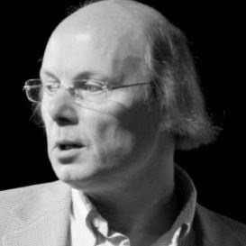
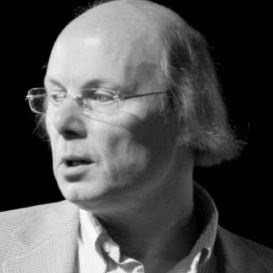

Tutoriale de programare
"Vorba e ieftină, arată-mi codul."-Linus Torvalds
Bine ai venit pe haisaprogramam.ro! Oferim tutoriale,explicații precum și exemple simple pentru cei ce doresc să fie inițiați în tainele calculatorului!
Wikipedia ne dă o definiție destul de bună cu care putem începe:"Un calculator, numit și sistem de calcul, computer sau ordinator, este o masină de prelucrat
date și informații conform unei liste de instrucțiuni numită program. În zilele noastre calculatoarele se construiesc în mare majoritate din componente
electronice și de aceea cuvântul „calculator” inseamnă de obicei un calculator electronic. Calculatoarele care sunt programabile liber și pot, cel puțin
în principiu, prelucra orice fel de date sau informații se numesc universale (engleză general purpose, pentru scopuri generale). Calculatoarele actuale
nu sunt doar mașini de prelucrat informații, ci și dispozitive care facilitează comunicația între doi sau mai mulți utilizatori, de exemplu sub formă de
numere, text, imagini, sunet sau video sau chiar toate deodată (multimedia)."
 
